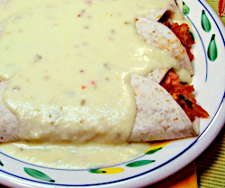

Cheesy Chicken Enchiladas

Cheesy Chicken Enchiladas:
Cooked chicken flavored with salsa and fresh cilantro wrapped in a flour tortilla and smothered with a creamy cheese sauce.
Ingredients:
- 6 oz onion
- 8 oz green bell peppers
- 8 oz coocked chicken
- 1/2 cup tomato sauce
- 2 teaspoons salsa
- 12 sprigs of cilantro
Directions:
- Chop onion and green pepper and place in a saucepan along with cooked chicken, tomato sauce, salsa, cilantro and chopped garlic. Heat on medium, stirring often.
- In a small bowl, whisk together milk and flour until there are no lumps.
- Melt margarine in a small saucepan and pour in milk and flour mixture. Stir in grated cheeese and continue stirring until blended and creamy.
- Warm tortilla in oven at 400 degrees for 5 minutes. Fill warm tortilla with chicken mixture and pour cheese sauce over the top.